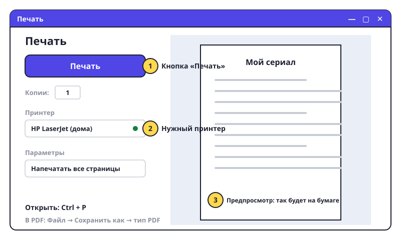

Печатаем и отправляем
Доклад готов. Теперь его нужно распечатать для школы или отправить учителю.

Печать
- Нажми Ctrl+P. Справа покажется, как будет выглядеть лист. Посмотри: ничего не обрезано?
- Проверь, что выбран нужный принтер (его название вверху).
- «Копии» — сколько раз печатать. Обычно 1.
- Нажми большую кнопку «Печать». Принтер должен быть включён и с бумагой.
Сохранить как PDF
- PDF — файл, который у всех открывается одинаково и который нельзя случайно испортить. Учителя любят PDF.
- «Файл» → «Сохранить как» → в окошке «Тип файла» выбери PDF → «Сохранить».
- Теперь у тебя два файла:
доклад.docx(можно редактировать) идоклад.pdf(для отправки).
Отправить
- Открой почту или мессенджер (Telegram, WhatsApp) — вместе с родителями.
- Нажми на скрепку 📎 — «Прикрепить файл». Найди свой PDF в папке «Мои уроки».
- Напиши пару слов: «Здравствуйте! Отправляю доклад про...» и отправь.
- Или просто перетащи файл из Проводника прямо в окно чата — тоже работает.
Попробуй сам: сохрани «Мой сериал» как PDF. Отправь его маме или папе в мессенджере.
Перед печатью всегда смотри предпросмотр (Ctrl+P). Так не потратишь бумагу на пустой лист.